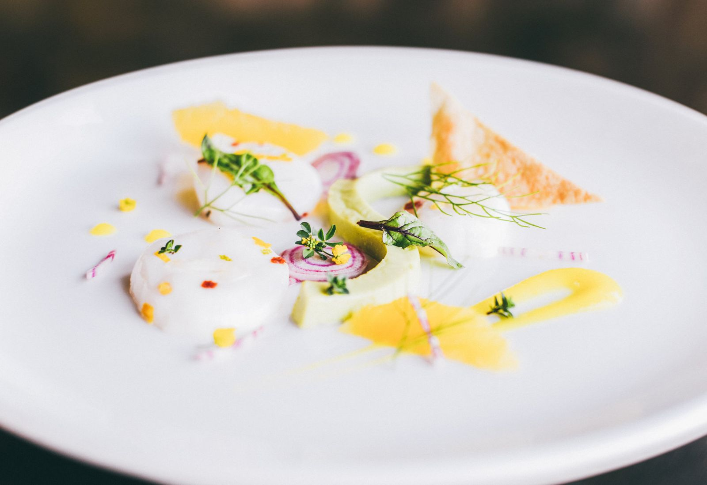

3Blocks from Toomer's CornerIn the historic downtown district of Auburn
About Acre
A delightful anachronism: a restaurant with sophisticated charm and repurposed architectural details, serving stylishly modern food with roots deep in Southern soil.

The land
Set on a historic acre, hence the name.
The restaurant celebrates seasonal, locally sourced ingredients with a deep respect for the region and community. An avid and self-taught outdoorsman, farmer, and forager, Chef Bancroft built Acre as both a culinary destination and a personal expression of his connection to the land.
Led by Bancroft, the kitchen sources from on-site gardens and orchards, local farms, and the bounty provided by the Blackbelt Region, reinterpreting the rich heritage of Alabama cuisine. Daily menu offerings reflect whatever is ready to pick.
Continue reading
Chef Bancroft collaborates with the Auburn University Meat Lab and local ranchers to source responsibly farm-raised meat. Look for our charcuterie offerings (the art of salting, smoking, brining, and curing meats) on the ‘Butcher's Block’ along with house-made pickles and jams, as well as many delicious cheeses produced by local and regional artisans. Bancroft also sources the freshest seafood, with special emphasis on fish and shellfish from the Gulf Coast.
Acre strives to be a vibrant part of the “Auburn” experience, welcoming students, returning alums, and University guests to celebrate everything we treasure about this special town. Whether meeting for a private business lunch in the Corner Room, having dinner with friends or family, or just unwinding in the lounge, Acre hopes to become an Auburn tradition that you will celebrate often.
Bancroft and his cousin, interior designer Emi Mason, designed the lofted ceilings to showcase beams salvaged from the 100-year-old Crawford General Store, donated by Bancroft's fishing buddies, the Letos. The interior walls are wrapped in solid oak sourced from Ten Mile Creek Farms, owned by Bancroft's grandfather, and removed when the forest was being thinned.
“Our goal is to interpret the complex, traditional tastes of the Deep South in a totally fresh and modern way.”David Bancroft · Chef / Owner
The Grounds
Walk the acre.
Illustrative sketch · not to scale
The Menus
What the season is offering.
The kitchen cooks with the harvest, so dishes change. The menu at your table is the final word.
*Consuming raw or undercooked meats, poultry, seafood, shellfish, or eggs may increase your risk of foodborne illness. All credit card transactions are charged an additional 3% surcharge to help offset processing costs; there is no surcharge for debit, cash or check. The full reserve wine list and spirits runs 18 pages.
An evening at Acre
Louis M. Martini Wine Dinner
Tuesday October206:00 PM to 9:30 PM
Five Louis M. Martini wines. Five courses. One very good night at Acre. We're pairing the wines of this iconic Napa Valley producer with a dinner built to match, moving from bright, coastal-inspired flavors into richer fall dishes, and finishing with one seriously fun dessert and a glass of Gnarly Vines Zinfandel.
Inside the lofted private dining room are black walnut floors and a charming chandelier made from an old fish basket from the family fish farm. The massive farm table was a gift to the chef from the Randle family, owners of Randle Family Farms, who provide fresh vegetables and meats for our kitchens.
For a regular table, reserve on Resy or call (334) 246-3763 and press 1.
The Club
A piece of Acre, at home.
Quarterly
Farm Fresh Provision Box
A hand-selected collection of seasonal products straight from the Acre Farm and Kitchen: artisan pantry staples, homemade snacks from trusted recipes, and a few surprises. Everything is sourced locally or made in-house.
A curated selection of wines from around the world, rare and sought-after varietals alongside beloved classics, hand-selected each month by the Acre wine team.